[toc]
0. 前言
毕业设计选到一个知识图谱相关的课题。
而知识图谱中的一个关键问题就是：数据存储方式。
1. 图数据库选型
传统的知识图谱存储方式有以下三大类：
- 关系型数据库。成熟稳定、使用广泛、文档丰富，但并不擅长处理复杂“关系”。
- RDF 三元组存储。由 W3C 制定的标准，具有强大的语义表达能力，但空间开销大、更新维护代价大。
- 图数据库。与知识图谱结构天然匹配，关系查询性能高，但数据更新复杂，大节点处理开销高。
对于关系型数据库与图数据库的关系查询性能对比，《Neo4j in Action》书中做过一项实验：在一个有1000000个人、每个人有50个朋友的庞大社交关系网中，分别用 MySQL 和 Neo4j 查询深度2~5的朋友的朋友，其结果如下：
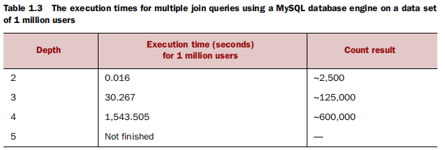
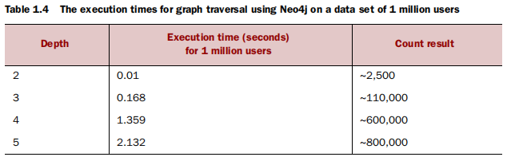
由此可见，关系型数据库在解决复杂关系查询时，相当无力。
而结合毕设的实际情况，将采用图数据库为主的存储方式。
当下主流的图数据库如下（参考网站）：
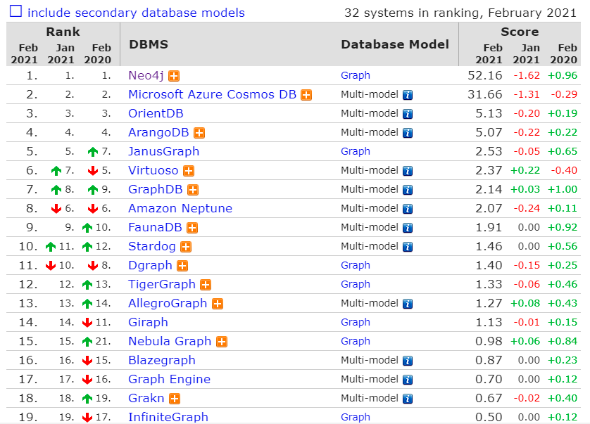
而由于时间和精力有限，将主要调研对比 Neo4j 和 ArangoDB 两种图数据库。
| Neo4j | ArangoDB | |
|---|---|---|
| 数据库类型 | 图数据库 | 多模数据库 |
| 相关网址 | 官网、官方文档 | 官网、官方文档 |
| 目前排名 | 第一 | 第四 |
| 主要实现语言 | Java | C++ |
| 生态 | 起步较早，社区活跃，文档丰富，使用体验较好 | 社区较活跃、文档较非富，使用体验略差 |
| 存储系统 | 原生图结构 | RockDB |
| 存储模式 | 仅支持图存储模式 | 支持键值对、文档、图存储模式，可混合使用 |
| 查询语言 | Cypher | AQL |
| 收费情况 | 商业版需付费使用，社区版功能限制较多，比如仅支持十亿级数据存储、单机存储等，见官网社区版与商业版对比 | 商业版需付费使用，但社区版功能已足够非富 |
| 开源情况 | 社区版开源 | 开源 |
| 事务 | ACID | ACID |
| 性能（参考：1. ArangoDB、Neo4j、OrientDB单机性能比较；2. Nebula 与 Neo4j、ArangoDB 等图数据库的 Benchmark） | 数据导入性能较优，查询性能略差，深度查询性能较差 | 数据导入性能较差，查询性能略优，深度查询性能较优 |
结合上述对比，Neo4j 有着更棒的生态、更好的使用体验。但社区版对数据规模和单机存储的限制，是其严重的缺陷。
而 ArangoDB 虽然生态和体验稍差，但查询性能较优，功能限制少。同时，支持多种存储模式，可简化技术栈。
2. ArangoDB 基本概念
在 ArangoDB 中，有 Database、Collection、Document 三类基本概念。Database 是 Collection 的集合，Collection 中存储着数据记录，数据记录也就是 Document。
对比关系数据库：
Database与关系数据库中的数据库概念、作用相同，用于权限控制、界限划分，ArangoDB 中默认的 Database 称为_system；Collection相当于关系数据库中的表；Document则相当于表中的行，但不同于关系数据库，Document 中列不固定，每个 Document 都包含着随机的任意数量的键值对。每个 Document 都有一个默认属性_key，它是独一无二的、不可更改的、可自动生成的，Document 还有另一个默认属性_id，它等于<collection name>/<document _key>。
ArangoDB 提供网页可视化界面，如下是在 test 数据库中创建的 user 集合。
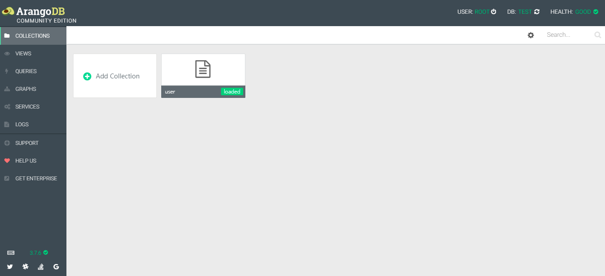
如下是在 user 集合中的文档数据，每个文档相当于一条 json 形式的数据记录，除了默认三个属性，其它都可不必相同。
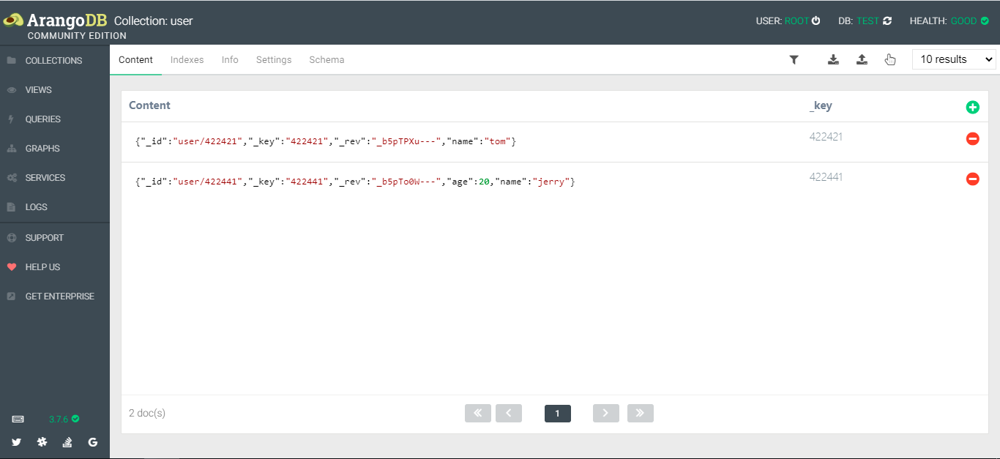
3. ArangoDB 基本操作
ArangoDB 使用 AQL 查询语言，类似 SQL 语言，对文档数据的基本操作示例如下：
- 查询某个 Document：
1 | RETURN DOCUMENT("users/9883") |
- 查询多个 Document：
1 | RETURN DOCUMENT( ["users/9883", "users/9915", "users/10074"] ) |
- 查询 Collection 中所有数据：
1 | FOR user IN users |
- 查询结果排序：
1 | FOR user IN users |
1 | FOR user IN users |
- 查询结果筛选：
1 | FOR user IN users |
- 查询并返回指定属性：
1 | FOR user IN users |
返回示例：
1 | [ |
- 查询、指定属性、重命名并返回 json 对象：
1 | FOR user IN users |
返回示例：
1 | [ |
- 多 Collection 联合查询并返回 json 列表：
1 | FOR user1 IN users |
返回示例：
1 | [ |
- 复杂查询：
1 | FOR user1 IN users |
- 更新 Document 中的某些属性（不存在则创建），不影响其它属性：
1 | UPDATE "9915" WITH { age: 40 } IN users |
- 更新 Document 中的某些属性，并删除其它属性（
_key、_id等除外）：
1 | REPLACE "9915" WITH { age: 40 } IN users |
- 插入文档：
1 | INSERT { name: "Katie Foster", age: 27 } INTO users |
- 插入文档并返回插入数据：
1 | INSERT { name: "James Hendrix", age: 69 } INTO users |
- 删除指定 Document：
1 | REMOVE "9883" IN users |
1 | FOR user IN users |
4. ArangoDB 图概念
在 ArangoDB 的图模式中，结点（实体）用 Document 存储，边（关系）用 Edge 存储。
Edge 是一种特殊的 Document，也存储在 Collection 集合中，几乎相当于 Document。区别是，Edge 除了默认的 _id、_key 属性，还有默认的 _from、_to 属性，分别指向边所连结点的 _id。
对 Edge 的增删改查操作与对 Document 操作几乎相同，区别是 _from、_to 属性不能为空。比如，插入边时必须要指定 _from、_to 属性值：
1 | INSERT {_from: "papers/38153", _to: "authors/37290" } INTO write_by |
对比关系数据库：
在关系数据库中，实体间关系通过外键以及中间表的形式表示，关系查询则通过表连接的形式表示；
而在 ArangoDB 图模式中，关系数据与实体数据相互区分，实体间关系更加清晰，并提供逻辑清晰的、专门的、性能更强的关系查询
在 ArangoDB 可视化操作界面中，创建的点集合和边集合如下：
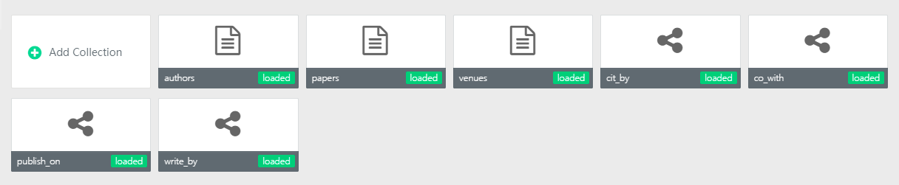
可视化界面中还提供 Graph 图的显示，设置好边的起止点集合等信息，就可以显示出对应的图：
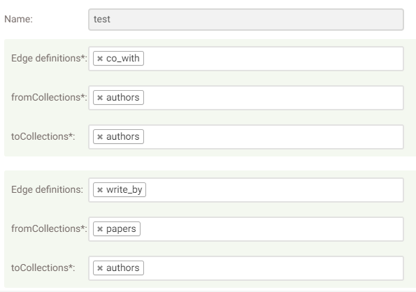
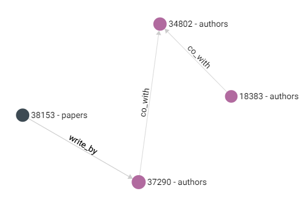
5. ArangoDB 图操作
参考：Graph Course
在 ArangoDB 的图操作中，对结点和边的增删改查，就是对 Document 数据的基本操作，不再赘述。
图操作的关键是关系查询操作，也称图遍历（Graph Traversal），相当于关系数据库中的连接查询。
ArangoDB 中，进行图遍历（关系操作）的 AQL 语法如下：
1 | FOR vertex[, edge[, path]] |
FOR 后跟着三个变量：
vertex必选，指代此次遍历中的点edge可选，指代此次遍历中的边path可选，此次遍历的路径，包含两个属性：vertices路径上所有点的数组edges路径上所有边的数组
IN [min[..max]] 指明遍历深度，min 默认为 1 ，max 默认等于 min。
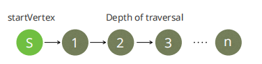
OUTBOUND|INBOUND|ANY startVertex edgeCollection[, more…] 中：
startVertex指明遍历开始点OUTBOUND|INBOUND|ANY指明遍历方向edgeCollection[, more…]指明遍历可经过的边集合
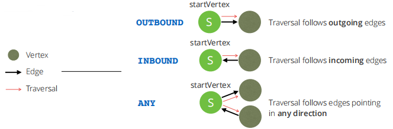
使用示例（现有 airports 点集合和 flights 边集合）：
- 查询所有从
LAX机场出发，深度为1，经过flights边到达的机场的名字：
1 | FOR airport IN 1..1 OUTBOUND 'airports/LAX' flights |
- 查询10个从
LAX机场出发，深度为1，经过flights边最终到达的机场和经过的边：
1 | FOR airport, flight IN OUTBOUND 'airports/LAX' flights |
- 查询10个到达
BIS机场，深度为1，flights集合的边：
1 | FOR airport, flight IN INBOUND 'airports/BIS' flights |
返回的可视化结果如下：
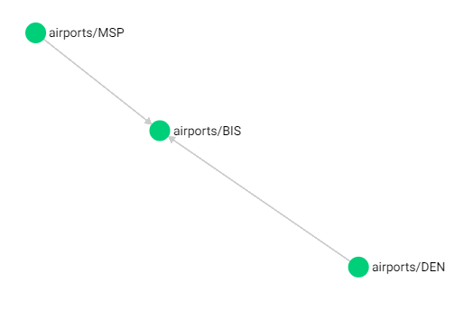
- 查询所有1月5至1月7号间，从
BIS机场出发或到达BIS机场，深度为1的机场城市及航班时间：
1 | FOR airport, flight IN ANY 'airports/BIS' flights |